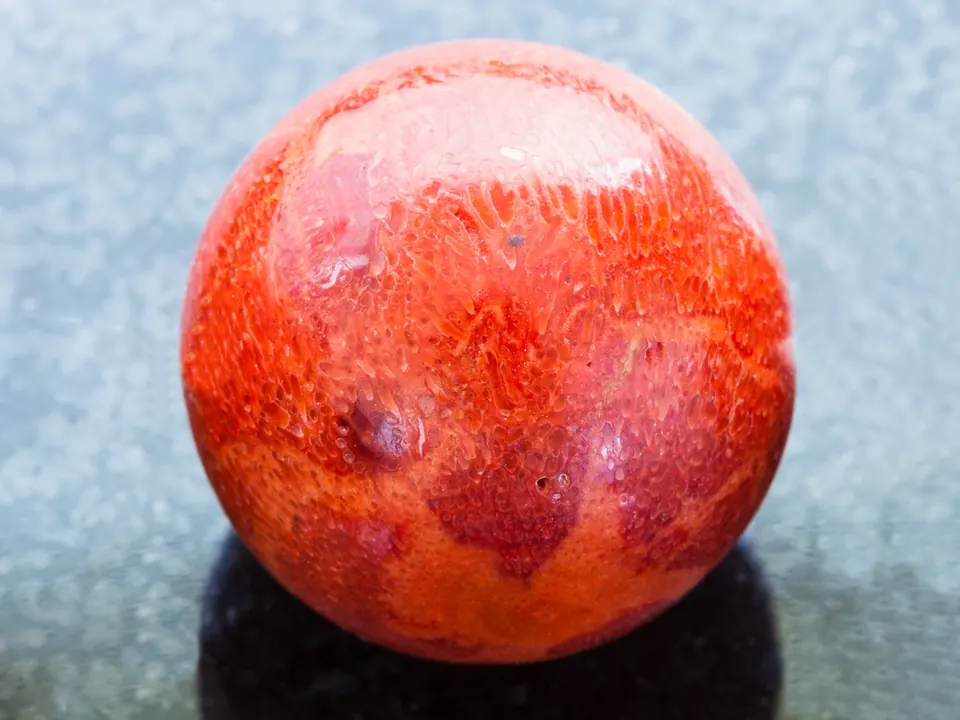

海水珠與淡水珠：家族的戰爭
海水珠與淡水珠，是珍珠家族的兩大陣營——一個貴氣逼人，一個平易近人。

核心定義
海水珍珠：產自海水貝類（Akoya 馬氏貝、南洋白蝶貝、大溪地黑蝶貝），單貝單珠（或少量）、珠層厚、光澤銳利——產量低、成本高、價格貴。淡水珍珠：產自淡水蚌類（中國為主），單蚌可產多珠、產量大——價格親民、形狀多樣。
一句話總結：海水珠是「精工細作」——每顆都被貝類精心包裹數年；淡水珠是「量產高手」——一蚌多珠、供應充足。兩者的成分相同，差異在「品質分布」與「產量」。
特徵與分類
| 項目 | 海水珠 | 淡水珠 |
|---|---|---|
| 光澤 | 銳利鏡面 | 柔和 |
| 大小 | 3-16mm | 2-13mm |
| 形狀 | 多正圓 | 多巴洛克 |
| 珠層 | 厚 | 較薄 |
| 價格 | 高 | 親民 |
海水珠的「銳利光澤」與「正圓比例高」是它貴的核心：南洋珠大到 16mm、大溪地珠帶神秘黑綠暈彩、Akoya 是經典鏡面光；淡水珠近年品質提升（無核養殖、圓度改善），性價比極高。
科學原理
海水珠用「有核養殖」：植入珠核＋外套膜片，貝類層層包裹——珠核保證圓度、珠層決定光澤與厚度。淡水珠常用「無核養殖」：只植外套膜片，珍珠全由珍珠質構成——圓度靠運氣（多巴洛克），但珍珠質更純。
光澤差異的科學：海水（鹽度與礦物）環境讓文石層更緻密規則→反射更銳利；淡水珠層較疏鬆→光澤柔和。珠層厚度：海水珠珠層常達 1-2mm（南洋珠更厚），淡水珠較薄——珠層厚，光澤耐久。
鑑定與鑑別方法
- 看光澤：海水鏡面 vs 淡水柔和
- 掂重量：海水有核偏重、淡水無核較輕
- 看形狀：海水多圓、淡水多變
- 查珠層（放大鏡）：海水厚、淡水薄
- 證書確認：海水/淡水、產地
市場行情與保養建議
行情：南洋珠（金珠、白珠）單顆數千至數萬人民幣、大溪地珠次之、Akoya 入門（數百至數千）、淡水珠親民（幾十至數百）。近年淡水「愛迪生珠」（大顆圓潤）崛起，性價比驚人。
選擇建議：追求貴氣與光澤選海水（南洋/大溪地）、追求經典選 Akoya、追求性價比與設計感選淡水。珍珠買「亮」，海水淡水只是產地與成本的標籤。
常見誤區
海水珠品質分布更優（光澤圓度），但頂級淡水珠（愛迪生珠）可與中檔海水珠媲美——「海水更好」是統計，不是定律。
淡水珠產量大、入門價低，但頂級淡水珠（大顆、圓、亮）有獨立行情——近年淡水珠品質躍升，早已不是「廉價代名詞」。
冷知識
白蝶貝可長到 30 公分——它孕育的南洋珠大到 16mm 以上，是珍珠界的「巨無霸」。
黑蝶貝分泌的黑色素讓珍珠呈黑灰綠——「黑珍珠」不是染色，是貝類的基因禮物。
反直覺觀點
淡水珠雖量大，但無核養殖的圓度全靠運氣——一蚌多珠，圓潤亮澤者寥寥。頂級淡水珠的稀有度，不輸海水珠。
海水單貝單珠、養殖週期長——貴在供應稀缺，不在「品質神聖」。理性買家看光澤圓度，不為產地標籤付過度溢價。